Ca 01 · IHG × Green Paradise
Lời đọc v2 đã duyệt · mục tiêu 30–45 giây · 5 cảnh chờ duyệt hình ảnh/cách dựng
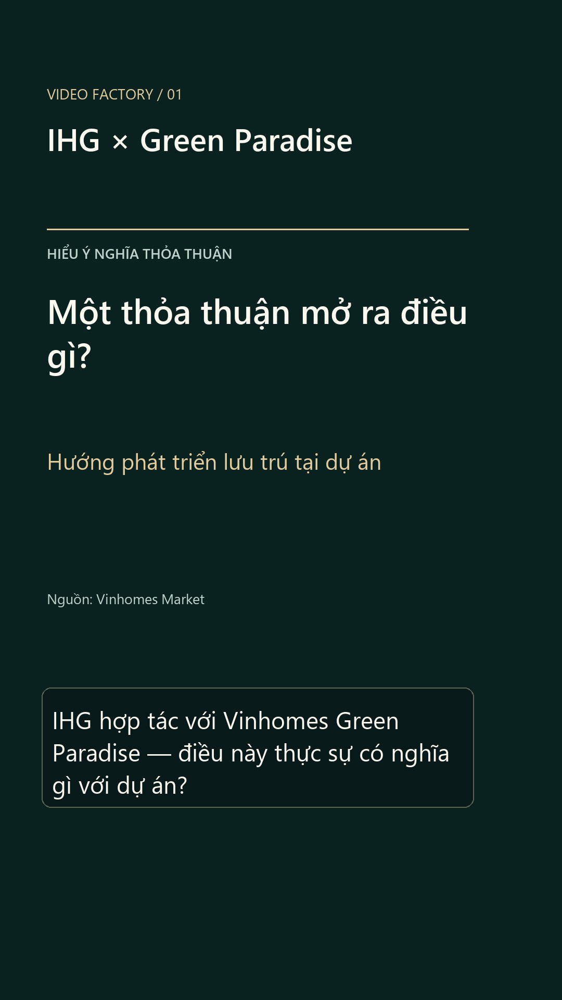
Cảnh 1 · IHG × Green ParadiseIHG hợp tác với Vinhomes Green Paradise — điều này thực sự có nghĩa gì với dự án?
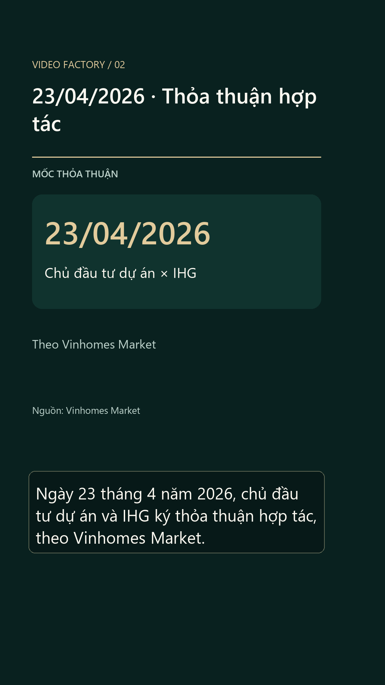
Cảnh 2 · 23/04/2026 · Thỏa thuận hợp tácNgày 23 tháng 4 năm 2026, chủ đầu tư dự án và IHG ký thỏa thuận hợp tác, theo Vinhomes Market.
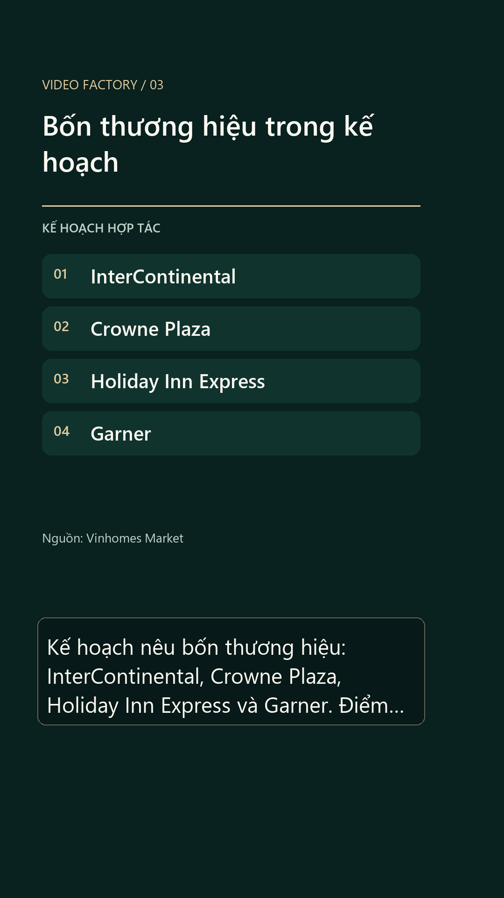
Cảnh 3 · Bốn thương hiệu trong kế hoạchKế hoạch nêu bốn thương hiệu: InterContinental, Crowne Plaza, Holiday Inn Express và Garner. Điểm đáng chú ý là định hướng lưu trú ở nhiều phân khúc, theo kỳ vọng của đại diện IHG.
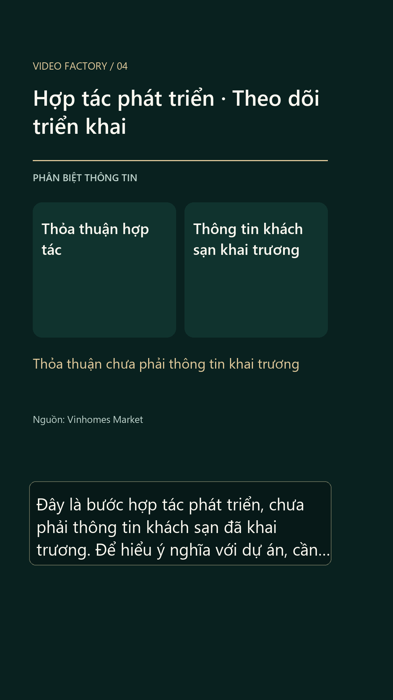
Cảnh 4 · Hợp tác phát triển · Theo dõi triển khaiĐây là bước hợp tác phát triển, chưa phải thông tin khách sạn đã khai trương. Để hiểu ý nghĩa với dự án, cần theo dõi kế hoạch được triển khai ra sao.
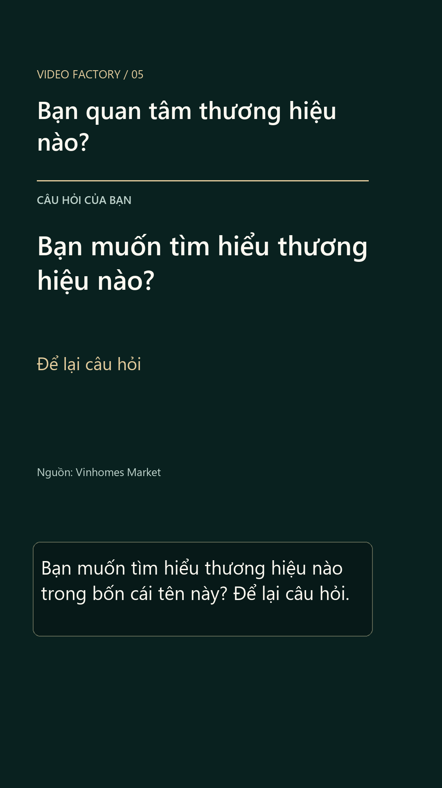
Cảnh 5 · Bạn quan tâm thương hiệu nào?Bạn muốn tìm hiểu thương hiệu nào trong bốn cái tên này? Để lại câu hỏi.
Nguồn: Vinhomes Green Paradise Và IHG Hotels & Resorts Hợp Tác · Dự án trong Studio
Ca 02 · Green Paradise · Đô thị thông minh
Lời đọc v2 đã duyệt · mục tiêu 45–60 giây · 5 cảnh chờ duyệt hình ảnh/cách dựng
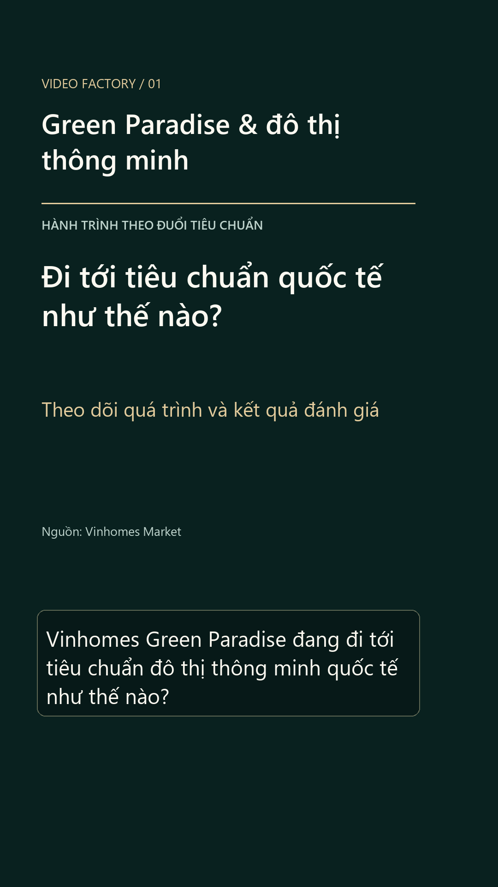
Cảnh 1 · Green Paradise & đô thị thông minhVinhomes Green Paradise đang đi tới tiêu chuẩn đô thị thông minh quốc tế như thế nào?
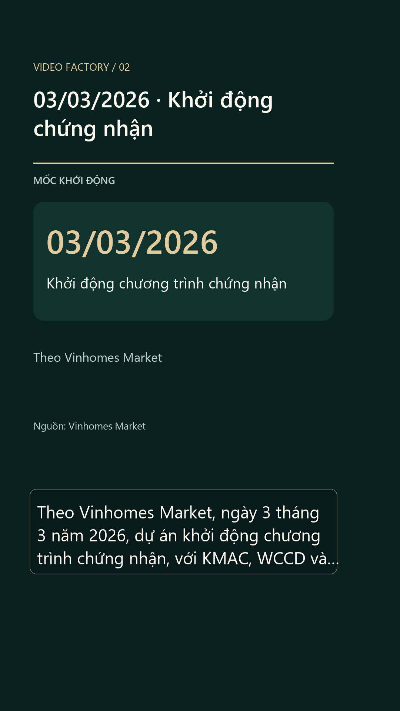
Cảnh 2 · 03/03/2026 · Khởi động chứng nhậnTheo Vinhomes Market, ngày 3 tháng 3 năm 2026, dự án khởi động chương trình chứng nhận, với KMAC, WCCD và SUM.
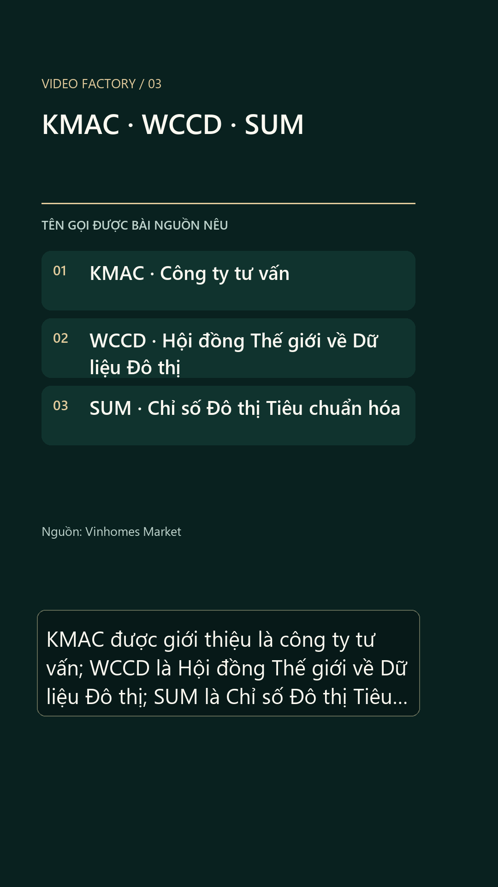
Cảnh 3 · KMAC · WCCD · SUMKMAC được giới thiệu là công ty tư vấn; WCCD là Hội đồng Thế giới về Dữ liệu Đô thị; SUM là Chỉ số Đô thị Tiêu chuẩn hóa. Bài viết nêu mục tiêu hướng tới chứng chỉ xanh quốc tế.
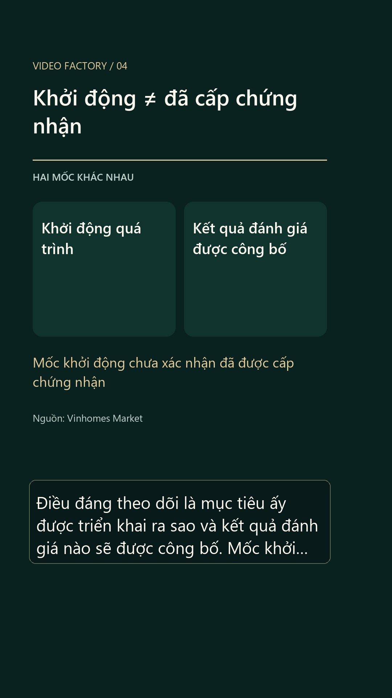
Cảnh 4 · Khởi động ≠ đã cấp chứng nhậnĐiều đáng theo dõi là mục tiêu ấy được triển khai ra sao và kết quả đánh giá nào sẽ được công bố. Mốc khởi động cho biết một quá trình đã bắt đầu, chưa phải xác nhận dự án đã được cấp chứng nhận.
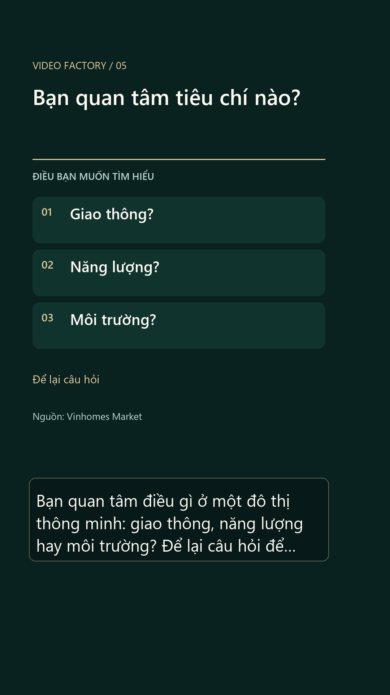
Cảnh 5 · Bạn quan tâm tiêu chí nào?Bạn quan tâm điều gì ở một đô thị thông minh: giao thông, năng lượng hay môi trường? Để lại câu hỏi để mình cùng tìm hiểu.
Nguồn: Vinhomes Green Paradise Khởi Động Dự Án Chứng Nhận Đô Thị Thông Minh Toàn Cầu · Dự án trong Studio
Ca 04 · Saigon Park · Góc nhìn người mua
Lời đọc v2 đã duyệt · mục tiêu 45 giây · 5 cảnh chờ duyệt hình ảnh/cách dựng
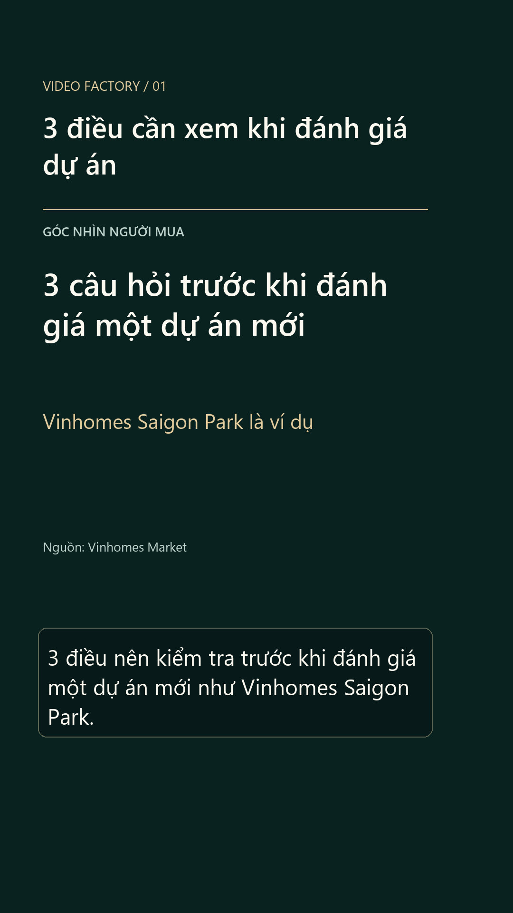
Cảnh 1 · 3 điều cần xem khi đánh giá dự án3 điều nên kiểm tra trước khi đánh giá một dự án mới như Vinhomes Saigon Park.
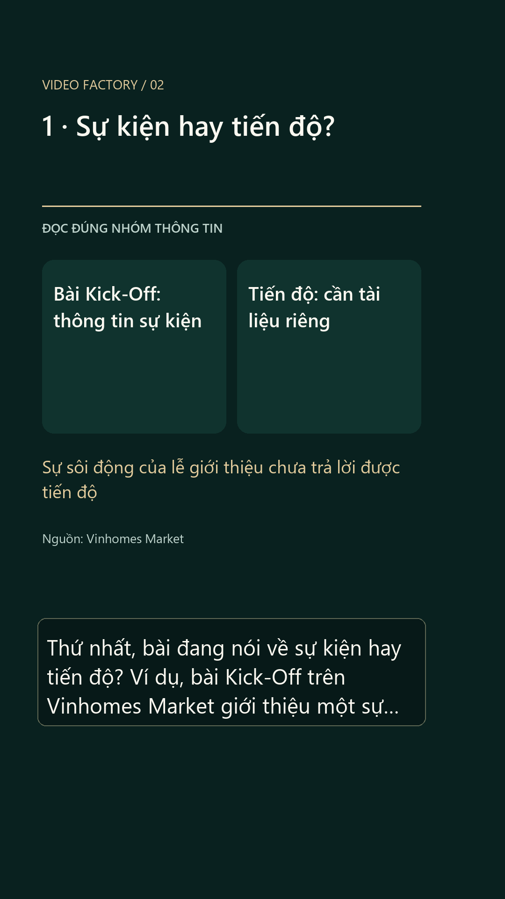
Cảnh 2 · 1 · Sự kiện hay tiến độ?Thứ nhất, bài đang nói về sự kiện hay tiến độ? Ví dụ, bài Kick-Off trên Vinhomes Market giới thiệu một sự kiện kinh doanh. Sự sôi động của lễ giới thiệu chưa trả lời được dự án đã triển khai đến đâu.
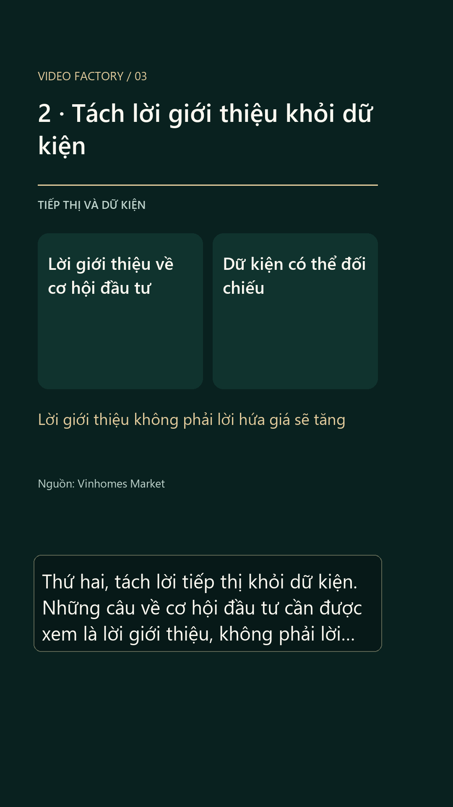
Cảnh 3 · 2 · Tách lời giới thiệu khỏi dữ kiệnThứ hai, tách lời tiếp thị khỏi dữ kiện. Những câu về cơ hội đầu tư cần được xem là lời giới thiệu, không phải lời hứa giá sẽ tăng.
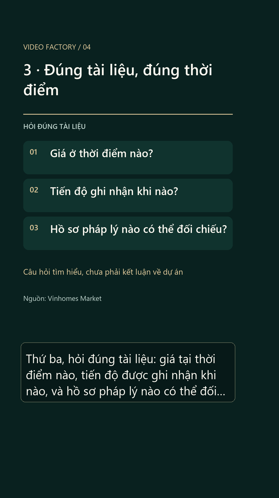
Cảnh 4 · 3 · Đúng tài liệu, đúng thời điểmThứ ba, hỏi đúng tài liệu: giá tại thời điểm nào, tiến độ được ghi nhận khi nào, và hồ sơ pháp lý nào có thể đối chiếu? Đây là câu hỏi để tìm hiểu thêm, chưa phải kết luận về Saigon Park.
Cảnh 5 · Bạn muốn làm rõ nhóm tài liệu nào?Bạn muốn làm rõ nhóm tài liệu nào trước? Để lại câu hỏi.
Nguồn: Kick-Off Vinhomes Sài Gòn Park: Bùng Nổ Thị Trường Tây Bắc TP.HCM · Dự án trong Studio
Ca 06 · Vang Nguyễn · Đọc tin theo thời điểm
Lời đọc v2 đã duyệt · mục tiêu 45 giây · 5 cảnh chờ duyệt hình ảnh/cách dựng
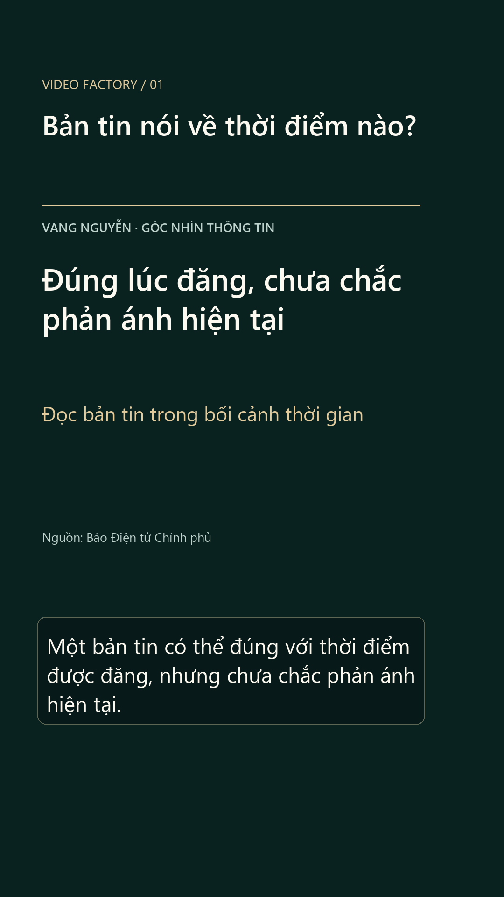
Cảnh 1 · Bản tin nói về thời điểm nào?Một bản tin có thể đúng với thời điểm được đăng, nhưng chưa chắc phản ánh hiện tại.
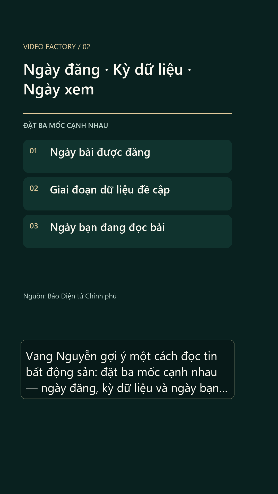
Cảnh 2 · Ngày đăng · Kỳ dữ liệu · Ngày xemVang Nguyễn gợi ý một cách đọc tin bất động sản: đặt ba mốc cạnh nhau — ngày đăng, kỳ dữ liệu và ngày bạn đang xem.
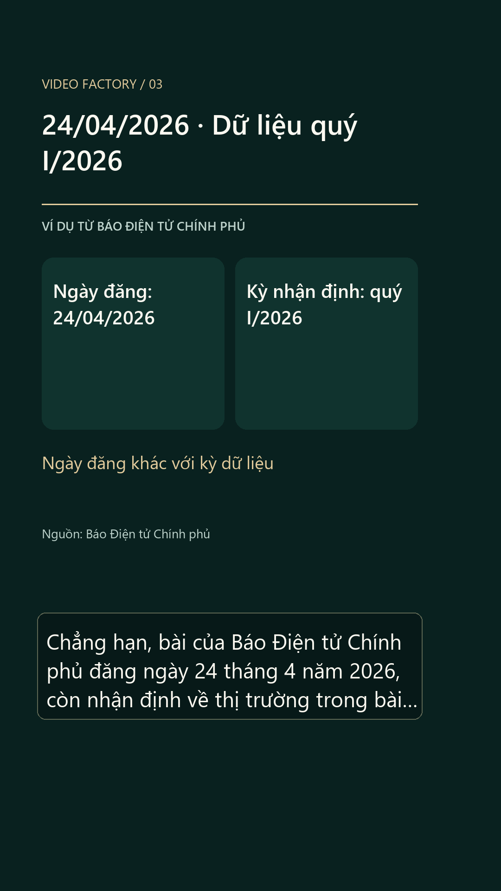
Cảnh 3 · 24/04/2026 · Dữ liệu quý I/2026Chẳng hạn, bài của Báo Điện tử Chính phủ đăng ngày 24 tháng 4 năm 2026, còn nhận định về thị trường trong bài đề cập quý I năm 2026.
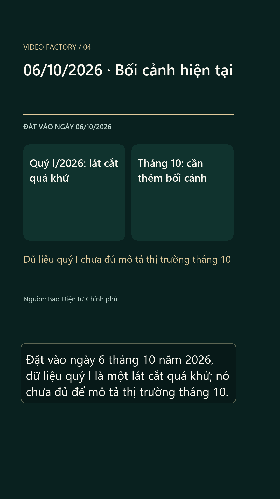
Cảnh 4 · 06/10/2026 · Bối cảnh hiện tạiĐặt vào ngày 6 tháng 10 năm 2026, dữ liệu quý I là một lát cắt quá khứ; nó chưa đủ để mô tả thị trường tháng 10.
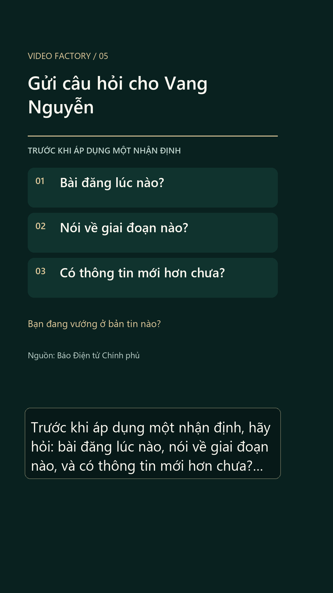
Cảnh 5 · Gửi câu hỏi cho Vang NguyễnTrước khi áp dụng một nhận định, hãy hỏi: bài đăng lúc nào, nói về giai đoạn nào, và có thông tin mới hơn chưa? Bạn đang vướng ở bản tin nào? Gửi câu hỏi cho Vang Nguyễn.
Nguồn: Giá nhà tiếp tục 'neo' cao, Bộ Xây dựng tìm cơ chế làm nhà thương mại giá rẻ · Dự án trong Studio
Ca 08 · Thị trường Việt Nam · Quý II/2026
Lời đọc v2 đã duyệt · mục tiêu 45–60 giây · 5 cảnh chờ duyệt hình ảnh/cách dựng
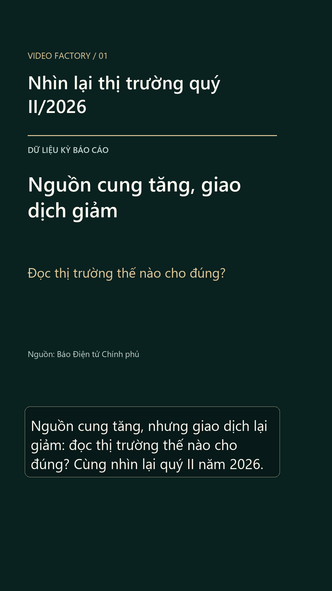
Cảnh 1 · Nhìn lại thị trường quý II/2026Nguồn cung tăng, nhưng giao dịch lại giảm: đọc thị trường thế nào cho đúng? Cùng nhìn lại quý II năm 2026.
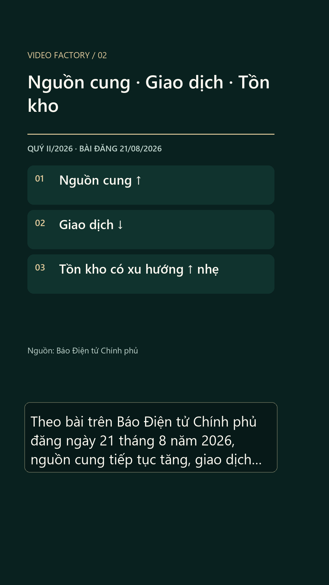
Cảnh 2 · Nguồn cung · Giao dịch · Tồn khoTheo bài trên Báo Điện tử Chính phủ đăng ngày 21 tháng 8 năm 2026, nguồn cung tiếp tục tăng, giao dịch giảm và tồn kho có xu hướng tăng nhẹ.
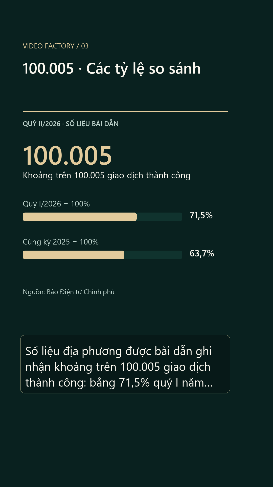
Cảnh 3 · 100.005 · Các tỷ lệ so sánhSố liệu địa phương được bài dẫn ghi nhận khoảng trên 100.005 giao dịch thành công: bằng 71,5% quý I năm 2026 và 63,7% cùng kỳ năm 2025.
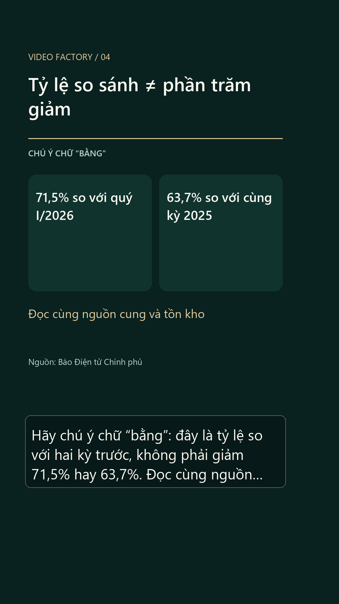
Cảnh 4 · Tỷ lệ so sánh ≠ phần trăm giảmHãy chú ý chữ “bằng”: đây là tỷ lệ so với hai kỳ trước, không phải giảm 71,5% hay 63,7%. Đọc cùng nguồn cung và tồn kho giúp thấy bức tranh đầy đủ hơn, thay vì suy ra giá của một dự án từ riêng lượng giao dịch.
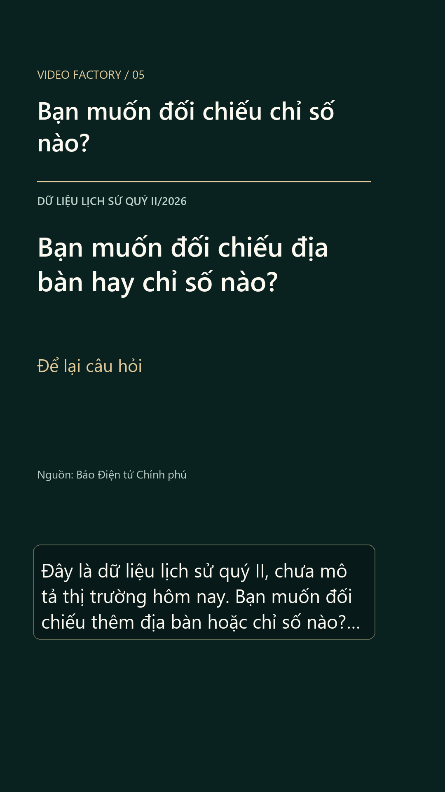
Cảnh 5 · Bạn muốn đối chiếu chỉ số nào?Đây là dữ liệu lịch sử quý II, chưa mô tả thị trường hôm nay. Bạn muốn đối chiếu thêm địa bàn hoặc chỉ số nào? Để lại câu hỏi.
Nguồn: Giao dịch giảm, tồn kho bất động sản tăng trong quý II/2026 · Dự án trong Studio
Sau khi xem, Owner có thể duyệt storyboard/media 01, 02, 04, 06, 08 hoặc yêu cầu sửa từng cảnh. Quyền sử dụng đồ họa và việc đưa chúng vào sản xuất đang chờ quyết định này. Chưa có hành động xuất bản.